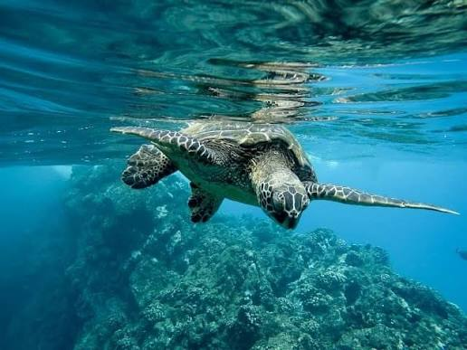
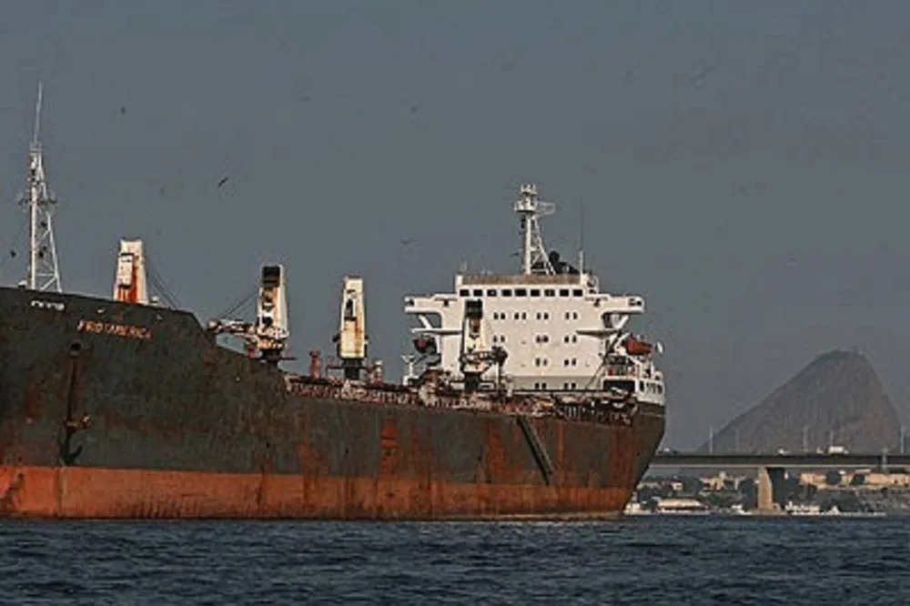

O Papel da Indústria Naval
Responsável pela construção, manutenção e modernização de frotas e plataformas, o setor movimenta grande parte do comércio global.
Explore as causas, a evolução histórica e as consequências do abandono e desmonte de embarcações nos oceanos.
Responsável pela construção, manutenção e modernização de frotas e plataformas, o setor movimenta grande parte do comércio global.
Após 25 a 30 anos de operação, navios comerciais enfrentam altos custos e pressões ambientais, exigindo o desmantelamento ou reciclagem segura.
O desmantelamento de navios é uma atividade essencial para o setor econômico, impulsionada pelo aumento da frota mundial e pela necessidade de uma destinação ambientalmente adequada para embarcações fora de operação. Quando feito corretamente, o processo fortalece a economia circular, permitindo recuperar até 98% dos materiais da embarcação — com destaque para o aço, que retorna diretamente para as siderúrgicas.
Por que o abandono de navios normalmente acontece?
O abandono de embarcações e plataformas antigas nos oceanos e áreas costeiras não é um acidente isolado, mas o resultado de falhas econômicas, logísticas e regulatórias do setor marítimo. Quando um navio atinge o final de sua vida útil, manter a sua operação torna-se financeiramente inviável devido aos custos crescentes de manutenção e às regras ambientais mais rigorosas.
Custos Elevados de Desmantelamento: O processo correto de reciclagem e desmonte exige infraestrutura licenciada (como docas secas), inventários rigorosos de materiais perigosos e mão de obra especializada, o que encarece o processo para os armadores.
Crises Econômicas e Falências: Muitas vezes, empresas proprietárias de frotas entram em falência ou operam na informalidade. Sem recursos ou com o paradeiro dos donos desconhecido, as embarcações acabam sendo deixadas à deriva ou encalhadas em portos e baías.
Oscilação do Mercado de Frete: Quando as tarifas de frete marítimo disparam durante crises geopolíticas, torna-se temporariamente mais lucrativo manter navios envelhecidos operando do que enviá-los para o sucateamento, gerando um represamento de frotas obsoletas que acabam descartadas de forma irregular posteriormente.

Diferente de um navio que passa por uma reciclagem controlada em estaleiros modernos, as embarcações abandonadas tornam-se verdadeiras "bombas-relógio" ecológicas. Sem passar pela etapa de descontaminação e retirada de resíduos, elas deixam vazar lentamente substâncias altamente perigosas diretamente no meio ambiente marinho.
Carga Tóxica e Corrosão: Cascos de navios e estruturas metálicas abandonadas liberam óleos lubrificantes residuais, borras de tanques e tintas anti-incrustantes à base de estanho, que alteram a química da água e intoxicam a fauna local.
Resíduos Perigosos Ocultos: Embarcações antigas contêm toneladas de amianto em seus isolamentos térmicos (substância altamente cancerígena) e metais pesados como chumbo e mercúrio, que entram na cadeia alimentar por meio de peixes e crustáceos consumidos pelas comunidades costeiras.
Essa degradação contínua destrói a vida aquática, compromete manguezais e praias (como ocorre na Baía de Guanabara, no Rio de Janeiro), e inviabiliza a pesca artesanal, impactando diretamente a biodiversidade e as comunidades locais.

Irineu Evangelista de Souza (Barão de Mauá) inaugurou o pioneiro estaleiro em Niterói (RJ), marco da industrialização nacional.
Impulsionado por planos governamentais e pelo II PCN, o Brasil chegou a ocupar o segundo e terceiro lugar na construção naval mundial.
O Ministério do Trabalho publicou a portaria nº 790 alterando a NR-34, regulamentando formalmente a atividade de desmonte no país para garantir segurança jurídica e proteção aos trabalhadores.
Possíveis soluções aplicadas ao monitoramento marítimo.
Existem milhares de navios naufragados espalhados pelos oceanos, e monitorar todos manualmente seria inviável. Por meio de modelos de aprendizado de máquina (machine learning), é possível cruzar variáveis como idade do naufrágio, profundidade, condições do casco, localização e volume estimado de combustível retido. Com esses dados, os algoritmos geram um ranking de risco ambiental e financeiro, permitindo que governos e equipes ambientais concentrem esforços e recursos exatamente nas embarcações com maior probabilidade de causar um desastre ecológico iminente.
Inspeção Subaquática e Detecção de Corrosão: A água salgada e a pressão marinha corroem lentamente o metal dos cascos submersos até que tanques internos se rompam. Para evitar esse colapso silencioso, veículos subaquáticos operados remotamente (ROVs) e drones autônomos utilizam visão computacional para inspecionar naufrágios em grandes profundidades. Os algoritmos analisam imagens e sensores em tempo real para identificar rachaduras, pontos críticos de ferrugem e vazamentos iniciais, reduzindo os custos e os riscos humanos de expedições tradicionais de mergulho.
Monitoramento por Satélites e Previsão de Vazamentos: Quando um vazamento ocorre em alto-mar, cada hora faz diferença. Sistemas de inteligência artificial processam continuamente imagens de satélite e radares de abertura sintética (SAR), capazes de enxergar através de nuvens e durante a noite, para detectar manchas de óleo na superfície da água antes que atinjam a costa. Além de alertar as autoridades rapidamente, a IA combina esses dados com correntes marítimas e padrões de vento para simular a trajetória da poluição, orientando onde instalar barreiras de contenção com máxima eficiência.
Fiscalização Marítima e Prevenção de Abandonos: Muitos navios em fim de vida útil são abandonados propositalmente por proprietários para evitar custos de manutenção ou descarte. Algoritmos preditivos analisam o histórico de navegação, registros de segurança e mudanças suspeitas de rota de milhares de embarcações ao redor do mundo. Dessa forma, autoridades portuárias conseguem identificar quais navios apresentam maior risco de infrações ambientais ou abandono futuro, permitindo realizar inspeções preventivas antes que a embarcação se torne um passivo tóxico no oceano.